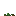
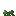
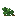
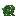
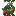
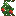
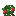
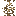
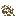

A tomato worth climbing
Crop sticks: a trellis you build on farmland, up to three high. A tomato grown up one is a single tall plant rather than three stacked bushes — it climbs a section at a time, fruits the whole way up, and pays out once for all of it.
Four sticks make two
The mod's first crafting recipe: four vanilla sticks in a two by two, for two crop sticks. Place one on farmland, or on top of another, up to three in a column. Sowing works either into the stick or into the farmland it stands in, because a post two pixels wide is not something anyone should have to aim at — and a stick used anywhere on a column goes on top of it, the way scaffolding stacks.
Three is the cap
The last stick a column may hold stands a little over half the block, so a finished trellis says so instead of making you find out by having a placement refused.
The trellis outlives the plant
A season takes the crop and leaves the sticks standing. Sow it again when the season comes back around.
Tomato only, for now
One flag on the crop roster decides who can climb. Every other plant ignores sticks entirely.
It climbs before it fruits
A plant reaching the adult age with an empty stick above it puts up a shoot and fills it in, rather than sprouting a finished section. Ripening does not start until there is nothing left to climb, so height is paid for in time — and a ripe plant can never gain a section, because it is already past the age that climbs.

0
2
3
filledOne plant, not a stack
Every section carries the same age once the climbing is done, and they ripen together. The foot has roots, the crown tapers to a tip, and the middle is the foot flipped so a tall plant is not one picture repeated. Picking anywhere on it picks all of it — one to three tomatoes per section, so a full trellis pays about three times over.

Foot · roots
Thickened into roots where it meets the farmland, with the stalk carried out of the top to meet whatever is above.

Middle · flipped
Only on a three tall plant. The join rows stay unmirrored, which is what keeps the stalk lined up where the sections meet.

Crown · tapered
Cut back at the top, so the plant visibly ends rather than being cut off by the block above it.
Tomato on a full trellis
Three sections · ripe Summer Tomato · 3 hunger
Row 0 of a block meets row 15 of the one above it, so every section is
drawn to agree about those rows — the stalk lines up at each join at every age.
Tomato · 3 hunger
Row 0 of a block meets row 15 of the one above it, so every section is
drawn to agree about those rows — the stalk lines up at each join at every age.
What a season leaves behind
A plant that dies on a trellis stays on it, dried out. Deleting it left a trellis that had been full one day and spotless the next, which read as a harvest rather than a loss. The remains are debris and nothing more: sow the stick again, or let a plant below climb up through it, and the new growth clears them.

Foot
The adult plant recoloured into the four straws the mod's dead crop already uses, then thinned by about a third.
Middle
The foot flipped, for the same reason the living middle is.

Crown
Flipped over a different scatter, since flipping alone would have left it identical to the middle, and cut back at the top like the living crown.
The same trellis, out of season
Three sections · dead AutumnWinterTrellises in the wild
A village field that regrows on its own can come back on a trellis. One plant in twelve, where the patch came back as a crop sticks can carry — rare on purpose, since a field full of them would make the crafted stick pointless.
Scattered, not banded
The crop is still chosen per three by three patch, so fields keep their bands, but each plant rolls for its trellis separately.
Sticks, not plants
Only the trellis and a young plant go down. It climbs its own sticks exactly as yours does — no free harvest for walking past.
Six in ten are single
Three in ten are two sticks, one in ten is three. A full trellis found in the world is meant to be worth noticing.
Yours are left alone
Putting sticks on a plot claims it. A field will sow itself over its own trellises and never over one you built.